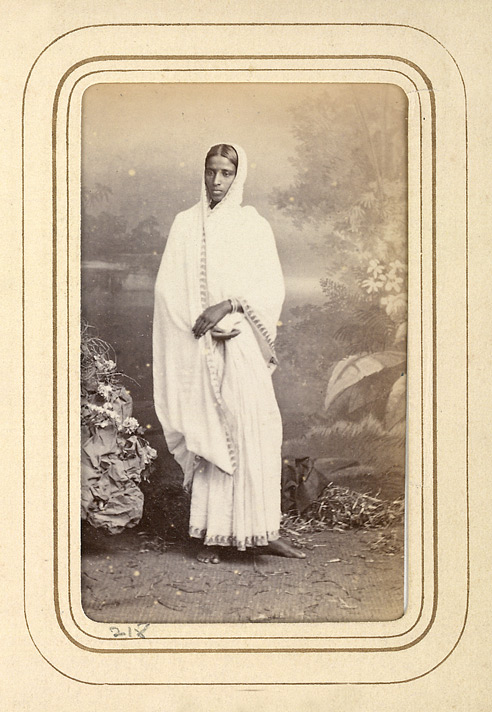
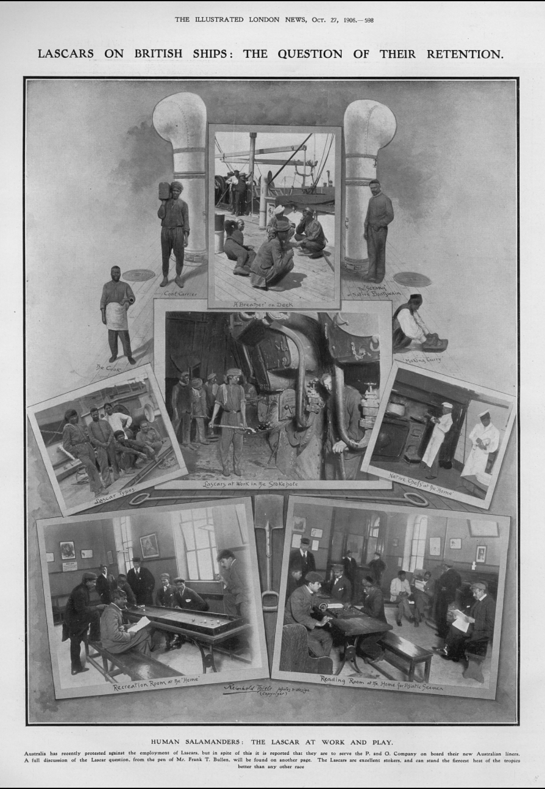

Watch Vicotrian style curry being made.
The start of the connection between Britain and India was in 1599 when the Royal charter was given to the East India Company by Queen Elizabeth. With the growth of the Company came prosperity around Britain as a new fleet was needed to transport goods. Originally, the ships were supposed to transport spices to Britain, however there was already a significant Dutch presence therefore the company began to shift its focus.
Throughout the 17th and 18th century, the Company built factories and warehouses in India as well as began trading with China. The influence in India grew so much that they started to take over governance and became the leading rulers of the area. The traders and wealthy businessmen that lived in India hired maids or ‘ayahs’ that they brought to England with them when they decided to move back. Additionally, there were lascars who worked on the trading ships. They were harder workers and they could be hired cheaper than english sailors. With the people, also came a part of their culture. The docks were full of different nationalities and goods.
It is a term that refers to maids that worked for richer families. The families would hire these maids to look after them and their children during the journey and then fire them at the docks once they were back in their homeland. Some families kept a couple of their maids and servants to work for them in their permanent homes, but many did not end up far from the sea. However there was an Ayahs’ House in London's Old Jewry that provided lodging for them as they looked for work that would enable them to go home or make a living in their new place.
Photograph of an Ayah from 1870s
A term that refers to the Indian seamen that worked on the ships, but often included people from other countries such as Malays, Yemenis and Siamese. There was a great deal of corruption that led to the lascars receiving very little money and there was not much protection for them either. Many sailors died at sea in the winter and there were instances of beatings onboard ships. There were three major sailor refuges in London: Shoreditch, Hackney and Shadwell. The lascars were disrespected and looked down upon by the British society.
Photo Collage from The Illustrated London News
All information used is from Bloody Foreigners by Robert Winder, pages 120-121 and 215-216.
Bourne and Shepherd. 1870. An Ayah. British Library.
“Lascars on British Ships: The Question of Their Retention” in The Illustrated London News. 1906. British Library.
Winder, Robert. 2005. Bloody Foreigners: The Story of Immigration to Britain. Abacus.
Watch Vicotrian style curry being made.

Aenean ornare velit lacus, ac varius enim lorem ullamcorper dolore aliquam.

Aenean ornare velit lacus, ac varius enim lorem ullamcorper dolore aliquam.